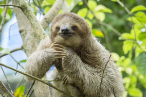

Three-toed sloth
Some species of fungi living in sloth fur have been found to be active against certain strains of bacteria, cancer and parasites.
- Scientific Name: Bradypus variegatus
- Average Weight: 8-10 lbs
- Average Lifespan: 20-30 years
- Diet: Herbivore
The three-toed sloth is an arboreal mammal found throughout Central and South America. They spend most of their time hanging from branches high up in the rainforest canopy, where they eat, sleep, mate and even give birth.